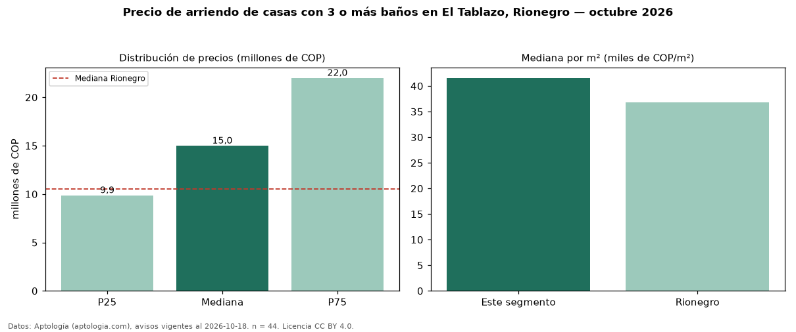

Precio de arriendo de casas con 3 o más baños en El Tablazo, Rionegro — octubre 2026
Con 44 avisos vigentes, el canon mediano de casas con 3 o más baños en arriendo en El Tablazo, Rionegro es COP 15 millones al mes. Eso es 11 % más que la mediana de todas las casas en arriendo de El Tablazo (COP 13,50 millones, n = 58); este segmento reúne el 76 % de esos avisos. Por metro cuadrado, la mediana es COP 41.566/m² al mes (n = 32), 0 % por encima del conjunto de referencia (COP 41.566/m²). El área mediana anunciada es 438 m². El segmento con más oferta es el de 3 o más habitaciones (44 avisos, mediana COP 15 millones). La administración mediana declarada es COP 1,00 millones al mes (n = 15), aparte del canon. La mitad central de los avisos va de COP 9,88 millones a COP 22 millones (razón 2,2), una dispersión alta. El estrato más frecuente es 6 (42 % de los avisos con estrato). Datos: Aptología (aptologia.com), CC BY 4.0 — https://www.aptologia.com/arriendo/rionegro. Archivos: PDF, CSV con las cifras y gráfica PNG.

| Avisos únicos | 44 |
|---|---|
| Percentil 25 | COP 9.875.000 |
| Mediana | COP 15.000.000 |
| Percentil 75 | COP 22.000.000 |
| Mediana por m² | COP 41.566 |
Fuente: avisos vigentes de portales inmobiliarios recopilados por Aptología, deduplicados (mínimo 30 avisos únicos por celda). Precios pedidos, no cerrados. Fecha: 2026-10-18.